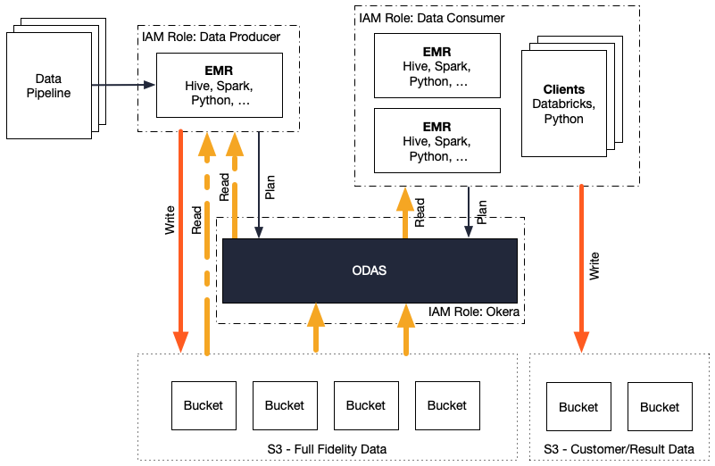

Hive Integration - Best Practices
Goals and Audience
This document summarizes the information contained in the online documentation pertaining the use of Hive with the Okera Platform. It links the existing documents where possible and otherwise adds a consistent narrative to what Okera recommends when used with Hive. The target audience is architects, developers, and database administrators (DBAs).
Introduction
Apache Hive is a library that converts SQL (to be precise, Hive SQL) into processing jobs that can be executed by various Hadoop-provided backends. This includes Apache YARN for batch processing, and Apache Tez for more ad-hoc type of queries. The process of doing contains the following steps:
- HiveQL is submitted to Hive by the user (using, for example, the Hive CLI)
- The Hive client parses the query and plans the request, which includes:
- Contacting the Hive Metastore to get the metadata for all contained tables and views in the query
- Computing a plan that expresses the query actions (such as aggregations, filters, and data scans)
- Optimizing the query based on (optionally) available statistics
- Determining resource requirements, based on data locality and query parallelism
- With the plan completed, the Hive client starts a job with those resource requirements in the configured processing backend
- The processing starts within the framework resulting in one or more stages of the query actions to run concurrently
- Intermittent (as in temporary) data is swapped to disk or cached in memory, dependent on the engine that runs the query
- All resulting data is persisted or streamed to the client for final delivery
While some of these steps in the planning phase are very similar to what is done by an RDBMS when executing SQL queries, there is quite a difference in the execution phase. This manifests itself in the need to understand the underlying engine and how its stage execution can affect the overall query performance.
This is no different than running a well- or badly written MapReduce or Spark job: when the job is not using the framework efficiently, the overall outcome is suboptimal. For this reason, using Hive mainly revolves around writing queries in such a way that it performs as expected. This includes making a conscious decision about:
-
Data Types - This is akin to regular databases, as in not to use costly types like
STRINGin favor of numeric types where possible. -
Partitioning - Large file system-backed datasets must be partitioned by one or more column value, for example a date or geographical region, to ensure the underlying data is grouped into smaller files. In combination with specific SQL
WHEREclauses this enables more efficient querying by eliminating unnecessary data files altogether, referred to as partition pruning. The number of partitions for a table should be not too high, that is, in excess of 100,000 partitions. It should also not be too low and, for example, cause each partition to contain tenths of gigabyte of data or more. The goal is to have a few hundred megabyte per partition. For date based partitioning, in most cases, day level partition works very well. -
File Formats - It is recommended to use a binary, block-based file format (when using a file system backend such as HDFS or S3). Depending on the use-case the choice in practice is between Avro (for row based access use-cases, such as batch oriented full dataset scans) or Parquet (for column-based use-cases, such as highly selective analytics). Text-based file formats are not ideal as they require more resources for parsing the text into binary objects.
-
Compression - Most datasets contain data that compresses well, reducing the necessary I/O operations needed to read the data. The extra cost of decompression is often negligible as systems are bound by other low-level resources first (such as networking or storage I/O). If the data is not already compressed, enabling block-based compression for the above file formats is recommended as a default. For processing engines that spill intermediate data to disk it is also recommended to enable data compression as well as a suitable binary file format.
-
Block Size - A common optimization for large-scale data processing is reading larger chunks of data from the same execution task. One reason is that starting up executors is a relatively slow operation (especially for YARN-backed processing), and another is that I/O is faster if data is transferred in contiguous chunks of reasonable size, referred to as streaming reads. For example, a block size could be set to 256MB and is read in chunks of 16KB.
-
Combine/Split Files - Engines that read data from files can be configured to combine smaller or split larger files to even out the perceived block sizes from the executor tasks.
In general, these decision points are the same with Okera, since the ODAS Workers perform the same operations for I/O.
Impact of Okera
Adding the Okera Platform in many ways does not change this pattern.
In fact, you can think of Okera’s ODAS as another table (or view) on top of raw data.
Complex queries that contain analytical functionality, such as the use of DISTINCT and GROUP BY, are neither allowed nor supported, in Okera.
Instead, Okera uses SQL DML only to enable efficient access control expressed in a common syntax.
The greatest impact of introducing Okera to an existing Hive stack is the change in schema design and the setup of the used Hive Metastore for the Okera Schema Registry.
Schema Design
Okera recommends the use of a layered schema design, which mitigates schema drift issues of the raw data source by decoupling the users from those resources. The layers are (explained from the bottom to the top):
-
Raw Tables - All registered datasets are represented as-is by a TABLE object. This means the original schema of the underlying data source is mapped into the Okera Schema Registry without any modification.
-
Cleanup Views - Any structural modifications are covered by this layer. The views wrap the raw tables one-to-one but are used to rename fields, cast types to appropriate ones, and fix column values (for example, remove a technical prefix that is obsolete). No filtering through the use of
WHEREclauses or combining of tables is allowed. The cleaned views form the entry level object layer for data consumers. See Schema Evolution for more information about how this layer helps to protect users from changes. -
Access Control Views - This layer adds any access related processing, including the use of functions to mask or tokenize column values, filtering using
WHEREclauses (for example, filter all rows based on geography) orJOINstatements (for instance, filter records using a blacklist with anANTI JOIN). Access control is not needed for all datasets, making this layer optional. For example, public datasets that can be accessed by all authenticated users do not need an access control view. -
External Views - For any query that contains unsupported SQL functionality, such as aggregations for analytical processing, the
EXTERNALkeyword can be used during the definition of a VIEW to cause its evaluation to occur in the downstream processing engine (which is not just Hive, but also Spark and similar tools). See the External Views section for details.

Defining those views over the base table is not costly, since the Okera Platform is evaluating them at query plan time. In other words, the operations of each view over the base table are combined into a single SQL statement, complete with user role-dependent actions. When the query is executed on the ODAS Workers, there is no further cost to the slightly more involved schema hierarchy. Essentially, it is free of any overhead.
With this approach you have a schema design architecture that accomplishes the following:
- Protects from schema evolution of the ingested data
- Allows to cleanup of raw table structures
- Enables efficient and comprehensive access control
- Leaves the execution of compute-intense operations to downstream engines
- Avoids adding overhead during query execution time
Okera recommends to follow those guidelines to provide for reliable and future-proof metadata management.
Schema Evolution
Should the structure of the external data source change (that is, the raw table schema changes), adjustments can be made in the cleanup views. That way, the raw table structure is disconnected from the users, so that low-level changes are only reflected in the view definition: All downstream consumers can use the view as they did before, avoiding the need to react to any schema change immediately.
Of course, there may be so substantial changes in the raw table structure that the view is eventually not able to disguise them.
In that case a new VIEW could be defined with a new name, representing the way forward.
Those who need to get access to the latest schema can migrate to the new view at their own convenience.
External Views
The way VIEWs are defined changes how they are evaluated.
For example, consider this VIEW definition:
CREATE VIEW sales_transactions_cal
AS SELECT <fields> ...
FROM sales_transactions
WHERE region = 'california'
Note: The base
sales_transactionsdataset is assumed to be an access control view.
Usually when a user query is containing such a view, for instance
SELECT * FROM sales_transactions_cal
the ODAS Planner returns the VIEW as a TABLE definition (that is, it returns the fields in the final schema) when asked by the compute framework.
This can be emulated by using the SHOW CREATE TABLE command from the Hive CLI (ignoring the remainder of the output):
hive> SHOW CREATE TABLE sales_transactions_cal;
OK
CREATE EXTERNAL TABLE sales_transactions_cal(
txnid bigint COMMENT '',
dt_time string COMMENT '',
sku string COMMENT '',
userid int COMMENT '',
price float COMMENT '',
creditcard string COMMENT '',
ip string COMMENT '')
...
This leaves the framework no choice but read from that (pseudo) table like it is a raw source of data (such as an S3 file).
Okera supports the EXTERNAL keyword to define a view that is different from this default behavior.
For example:
CREATE EXTERNAL VIEW revenue_cal
AS SELECT min(revenue) as minRevenue, max(revenue) as maxRevenue
FROM sales_transactions
WHERE region = 'california'
The view uses an aggregation function that is not supported by Okera itself.
The EXTERNAL keyword changes how the ODAS Planner is returning the VIEW definition when asked by the compute framework, returning the full VIEW definition instead:
hive> SHOW CREATE TABLE revenue_cal;
OK
CREATE VIEW revenue_cal AS SELECT * FROM salesdb.sales_transactions
WHERE region = 'california'
This causes the evaluation of the VIEW outside of Okera, and inside the downstream compute framework instead.
All of the unsupported SQL is handled downstream as well, while the source of the VIEW, here the sales_transaction access control view, is still handled by Okera, applying all the filtering and audit logging as expected.
Default Partition Pruning
DBAs have even more options using layered views in Okera, allowing them, for example, to limit the amount of data returned from a partitioned table when no matching WHERE clauses was defined.
The LAST PARTITION feature can avoid unnecessary full table scans (along the lines of SELECT * FROM <table_or_view> to check what data a dataset holds, just to realize it has terabytes or petabytes of data) that may inadvertently choke up valuable system resources.
This feature is very flexible and (as of Okera 1.2) allows to specify how many data files or how many partitions should be read instead of only the very last one. For example:
CREATE VIEW sampledb.ymdata_recent AS
SELECT * FROM sampledb.ymdata(LAST PARTITION);
CREATE VIEW sampledb.ymdata_last_file AS
SELECT * FROM sampledb.sample(LAST 1 FILES);
CREATE VIEW sampledb.ymdata_last_4_months AS
SELECT * FROM sampledb.ymdata(LAST 4 PARTITIONS);
This is also applicable to the raw tables, using table properties:
ALTER TABLE sampledb.tbl_ds1_last_1 SET TBLPROPERTIES(
'okera.default-last-n-partitions'='1')
Okera recommends using the default partition pruning on large tables with more than 100 partitions.
Writing Data
Hive supports multiple SQL statements to write data back into datasets. These are:
-
CREATE ... TABLE ... <table> ... AS SELECT ... FROM ...With one statement the user can create a new table and fill it with data returned by the specified query.
-
INSERT OVERWRITE TABLE <table> ... SELECT ... FROM ...This statement can be used to replace a partition or entire table with data generated by a given query.
-
INSERT INTO TABLE <table> ... SELECT ... FROM ...Instead of replacing, this statement will append the data from the specified query to the named table or partition.
-
INSERT INTO TABLE <table> ... VALUES ...This statement is the same as provided by regular RDBMSs, where concrete values are inserted into an existing table. In practice, this is used mostly to generate (small) test data.
All of these queries share the need to access the underlying storage location of the dataset. With Okera, you have two choices of handling these types of operations:
-
Use a Local Filesystem
In this case all writes bypass Okera altogether. This is useful for sandboxing or temporary staging of data on compute clusters, using a cluster-local filesystem, such as HDFS on ephemeral disks attached to the virtual machines. It is ideally suited for temporary datasets which have the same lifetime as the compute cluster.
-
Use a Shared Filesystem
Here the user (which could be a real user or a technical user that executes a data pipeline) runs Hive queries that write data into the shared filesystem, such as AWS S3 or Azure Blob Storage (WASB).
Notes:
- For either choice you need to have write access to the underlying storage system(s).
- For option #2, you also must have been ALL or INSERT permissions granted in the Okera Policy Engine.
For shared filesystems, there two modes of operations that are supported, which is controlled by setting the boolean configuration variable
okera.hive.allow-original-metadata-on-all-tables to either true or false (in the hive-site.xml file), with false being the default:
-
Allow Original Metadata (Variable set to
true)When this setting is chosen, Okera is enabling writes to partitioned and non-partitioned tables. Conversely, this exposes the underlying metadata of non-partitioned tables to clients, which disables their fine-grained access control. Partitioned tables are still fully controlled for reads.
-
Do Not Allow Original Metadata (Variable set to
false)The default mode does not expose the metadata for non-partitioned tables, meaning they cannot be written to. Conversely, fine-grained access control for reads are enabled. For partitioned tables, both read and writes are possible.
Note: Okera currently only supports writing to file systems (based on Hadoop’s
FileSystemimplementation). In other words, JDBC writing is not supported.
The following table summarizes the read and write support for either mode.
| Mode | Partitioned Table | Non-Partitioned Table |
|---|---|---|
true |
Read & Write | Write |
false (default) |
Read & Write | Read |
Depending on the existence of both table types, or only one of them, the administrator is able to choose the required mode when writes are necessary.
In practice, the reason to read and/or write data is manifold. The following diagram shows a common scenario, where data producers write authoritative (full fidelity) data into the storage systems. These are usually privileged processes that run as part of automated data pipelines. As such, they have elevated rights to read and write directly from and to the storage systems.
On the other hand, data consumers are running their own compute resources to analyse the data. Reading the data is fully controlled by the Okera Policy Engine, ensuring fine-grained access control is enforced as expected. Consumers can still write data into storage systems, for example persisting intermediate or resulting data, but do so with regular permissions and into separate storage locations.

Hive Metastore
Okera allows for flexible setups regarding the Hive Metastore service. The following are common scenarios in practice:
-
Embedded HMS - When you set up the Okera Platform, the default settings assume that Okera is responsible to run and maintain the metastore, which drives the Schema Registry.
-
External HMS - Another option is to use an existing Hive Metastore, particularly in Hadoop environments which have been configured with their own instance of HMS.
When configuring an external Hive Metastore, Okera will be very careful not to interfere with the existing database that is backing the existing metastore. Worst case scenario is that Okera is not able to read the schema of the metastore database and fail to start. If that happens, contact Okera to discuss support options.
Hive Configuration
The online client documentation lists the possible configuration settings for Hive. The troubleshooting section below uses some of those settings to address common issues.
Note: You must enable the Hive client integration provided by Okera to get fully seamless functionality with an ODAS cluster.
Distributed Filesystems
For cloud-based Hive setups, such as AWS EMR, Okera recommends to use the accompanying distributed file- or object service, that is, S3. In general, you need to ensure data is kept persistent and is not stored in ephemeral storage like, for example, EC2 instance storage, which is deleted when the compute cluster is deleted.
It is also recommended to configure the persistent storage system as the default Hive warehouse directory.
This can be set in the hive-site.xml configuration file.
Example: Changing the default table locations to an S3 bucket
<property>
<name>hive.metastore.warehouse.dir</name>
<value>s3://<bucket>/warehouse</value>
</property>
Local Filesystems
For Hadoop clusters, such as AWS EMR, there may be a local filesystem available (usually HDFS) that can be used for specific purposes. For example, the cluster-local filesystem can be used to experiment with data and processing jobs that completely bypass Okera. This is recommended by Okera for the development of user-defined functions (UDFs), since it does not require any premature registration with the Okera Platform and allows for easy replacement of the resources (that is, the Java JARs).
Note: Since the Okera Platform is bypassed, no access control and audit event logging is performed. Only use the cluster-local filesystem for non-sensitive data (such as anonymized test data), or ensure that the cluster is otherwise properly secured.
See the EMR documentation and Developing Functions for details.
Troubleshooting
In practice, adding Okera to an existing environment changes some of the behavior of queries. Listed below are some known issues.
Planner Timeouts
For file system-based datasets, if no default partition pruning is set and a user is running a full table scan (for example using SELECT * FROM <table_name>, the ODAS Planner needs to check the metadata of any data file that is part of the query.
Large tables may have many files and slower file systems for metadata operations, such as S3, will require more time than what is configured as a timeout between the client and the ODAS Planer.
This leads inevitably to problems where queries timeout during the planning phase.
Setting the timeout higher can be accomplished by using the following configuration property:
recordservice.planner.rpc.timeoutMs=300000 # 5 mins in milliseconds
See the FAQ article for more details.
Worker Timeouts
For batch jobs the processing may require a considerable amount of time, causing the connection between the client and the ODAS Worker nodes to time out.
The following property can be used to set the timeout higher:
recordservice.worker.rpc.timeoutMs=1800000 # 30mins in milliseconds